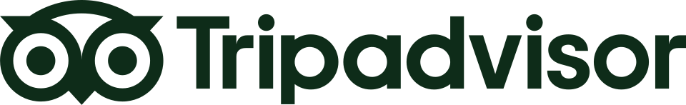

대표 로고대표 브랜드 마크
대표 로고대표 브랜드 마크홈 > 브랜드 매거진 > 코오롱인더스트리
코오롱인더스트리
코오롱인더스트리는 1957년 대구에서 창업주 이원만이 세운 한국나이론을 기원으로 하는 대한민국의 화학·소재·패션 기업이다. 국내 나일론 산업을 개척한 모체에서 출발해 1981년 코오롱으로 사명을 바꾸었고, 2009년 12월 그룹이 지주회사 체제로 전환하며 제조·패션 사업부가 분할돼 현재의 코오롱인더스트리로 신설됐다. 산업자재·화학·필름전자재료·패션 4개 부문을 축으로 하며, 연간 매출은 약 4조9천억원, 임직원 약 4천2백명 규모의 종합 소재 기업이다.
산업 분야 브랜드·비즈니스 · 공개 등급 자료 기반 · 브랜드 평가 4.1 ★
한눈에 보는 브랜드
코오롱인더스트리는 1957년 대구에서 창업주 이원만이 세운 한국나이론을 기원으로 하는 대한민국의 화학·소재·패션 기업이다. 국내 나일론 산업을 개척한 모체에서 출발해 1981년 코오롱으로 사명을 바꾸었고, 2009년 12월 그룹이 지주회사 체제로 전환하며 제조·패션 사업부가 분할돼 현재의 코오롱인더스트리로 신설됐다.
산업자재·화학·필름전자재료·패션 4개 부문을 축으로 하며, 연간 매출은 약 4조9천억원, 임직원 약 4천2백명 규모의 종합 소재 기업이다.
브랜드 관점
코오롱인더스트리는 코오롱그룹의 핵심 제조 계열로, 2010년 지주회사 전환 과정에서 옛 코오롱의 사업부문을 떼어내 신설됐다. 산업자재, 화학, 필름·전자재료, 패션의 4대 부문을 축으로 하며, 타이어코드와 에어백, 강철보다 강한 슈퍼섬유 아라미드 헤라크론 등 고부가 첨단소재 기술력을 강점으로 내세운다.
패션 부문은 코오롱몰을 중심으로 다양한 자체 브랜드를 전개하며, 2012년 시작한 래코드를 통해 자사 재고 의류를 소각 대신 해체·재구성하는 업사이클링으로 되살린다. 첨단소재 경쟁력과 지속가능성을 함께 추구하는 종합 소재·패션 기업으로 자리 잡았다.
시작과 성장
전후 한국이 합성섬유를 전량 수입에 의존하던 1950년대, 일본에서 사업 기반을 닦은 이원만은 나일론 국산화를 목표로 1957년 4월 대구에 한국나이론을 설립했다. 이듬해 첫 스트레치 나일론사 공장을 세우며 국내 나일론 산업의 첫발을 뗐고, 1963년 일산 2.5톤 규모 원사 공장을 가동했다.
1969년 한국폴리에스터 설립, 1971년 폴리에스터사 라인, 1973년 나일론 타이어코드 라인을 차례로 구축하며 섬유에서 산업소재로 영역을 넓혔다. 1981년 합병을 거쳐 코오롱으로 사명을 바꾸었고, 2005년에는 아라미드 헤라크론 양산에 국내 최초로 성공하며 첨단소재 기업으로 도약했다.
그리고 2009년 말 지주회사 전환 과정에서 제조·패션 부문이 분할돼 코오롱인더스트리가 신설됐다.
브랜드 아이덴티티
코오롱인더스트리는 생활의 질을 높이는 제품과 서비스로 고객의 삶을 바꾸는 '라이프스타일 이노베이터'를 비전으로 내건다. 코오롱의 심벌은 유기적 삼각 형태로, 인화·가화·심화 정신과 합리성·적극성·협동성을 결합해 영문 이니셜 K를 형상화한 것으로 설명된다.
실험실 플라스크, 섬유의 조직, 컨테이너 등 사업 영역을 연상시키도록 의도된 도형이다. 브랜드 보이스는 혁신적 소재로 산업의 기준을 바꿔온 개척자 서사에 뿌리를 둔다.
타깃은 글로벌 완성차·타이어·전자·에너지 기업 같은 B2B 고객과, 패션 부문의 아웃도어·골프·라이프스타일 소비자라는 두 층위로 나뉜다.
제품과 서비스
산업자재 부문은 타이어코드·에어백·아라미드 헤라크론·산업용사·인공피혁·멤브레인을 다루고, 화학 부문은 석유수지·페놀수지·에폭시수지를, 필름·전자재료 부문은 PET·나일론 필름과 광학필름·드라이필름 등을 공급한다. 수소 부문에서는 연료전지용 PEM과 막가습기, MEA를 양산한다.
패션 부문은 코오롱스포츠를 비롯해 쿠론·슈콤마보니·왁·지포어·에피그램 등 다수 브랜드를 운영한다. 채널은 완성차·타이어·전자·에너지 기업 대상의 글로벌 B2B 공급망과, 백화점·전문매장·온라인을 아우르는 패션 소비자 유통으로 구성된다.
현재 상태
본사는 서울 강서구 마곡동에 있으며, 그룹 본사는 경기 과천에 자리한다. 지배구조상 순수 지주회사 (주)코오롱을 정점으로 하는 코오롱그룹의 핵심 계열사로, 이웅열 명예회장이 지주회사 코오롱 지분 약 49.7%를 보유한다.
국가는 대한민국이며, 연간 매출은 약 4조9천억원, 2024년 영업이익은 약 1천6백45억원 규모다. 사업별 세부 매출 구성은 미공개.
타임라인
정리된 연도형 이벤트가 없습니다.
BI/CI 변천사
대표 로고대표 브랜드 마크함께 읽을 브랜드
 스포츠·아웃도어 · 자료 기반코오롱스포츠
스포츠·아웃도어 · 자료 기반코오롱스포츠코오롱스포츠(KOLON SPORT)는 코오롱인더스트리 FnC부문이 운영하는 대한민국의 아웃도어 브랜드다. 1973년 창립한 국내 1세대 아웃도어로, 고기능성 등산·아...
 브랜드·비즈니스 · 편집 검수Decathlon
브랜드·비즈니스 · 편집 검수Decathlon데카트론은 1976년 프랑스 릴에서 출발한 스포츠용품 대형 소매·제조 기업으로, 다양한 종목의 장비와 의류를 한 매장에 모아 합리적 가격에 제공하는 모델을 구축했다....
 브랜드·비즈니스 · 편집 검수Citibank
브랜드·비즈니스 · 편집 검수Citibank씨티(Citi)는 미국 씨티그룹이 운영하는 글로벌 소비자·기업 금융 브랜드로, 1812년 뉴욕에서 출발한 시티뱅크 오브 뉴욕을 뿌리로 한다. 빨강 아치가 워드마크 위...
 브랜드·비즈니스 · 편집 검수Toyota
브랜드·비즈니스 · 편집 검수Toyota도요타는 1937년 일본에서 설립된 자동차 제조사로, 코롤라·캠리·프리우스를 비롯한 광범위한 차종과 렉서스 럭셔리 브랜드를 운영하며 연간 1천만 대 이상을 판매하는...
브랜드·비즈니스 · 자료 기반LG화학LG화학(LG Chem)은 한국 최대의 화학 기업으로, 1947년 락희화학에 뿌리를 두며 현재 법인은 2009년 재편으로 성립했다.
KI
한국투자증권
브랜드·비즈니스 · 자료 기반한국투자증권한국투자증권은 한국투자금융지주가 지분 전량을 보유한 핵심 자회사로, 뿌리는 1974년 국내 최초 투자신탁 전업사로 출범한 한국투자신탁에 닿아 있다. 2003년 한국투...

브랜드·비즈니스 · 편집 검수Tripadvisor트립어드바이저(Tripadvisor)는 전 세계 여행자가 직접 남긴 후기를 모아 숙소·음식점·관광지·체험을 비교하고 예약하도록 돕는 미국의 여행 플랫폼이다. 2000...
 브랜드·비즈니스 · 편집 검수Yahoo
브랜드·비즈니스 · 편집 검수Yahoo야후는 1994년 미국에서 출범한 인터넷 포털·미디어 기업으로, 검색 디렉터리에서 출발해 이메일·뉴스·금융·스포츠 등 폭넓은 온라인 서비스를 운영해 왔다. 1990년...